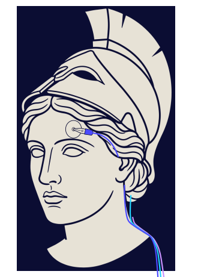
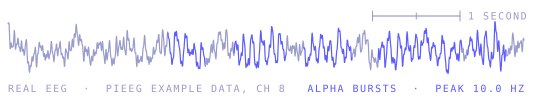
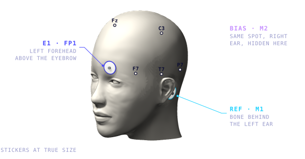
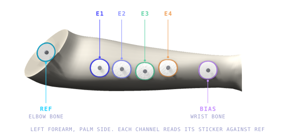
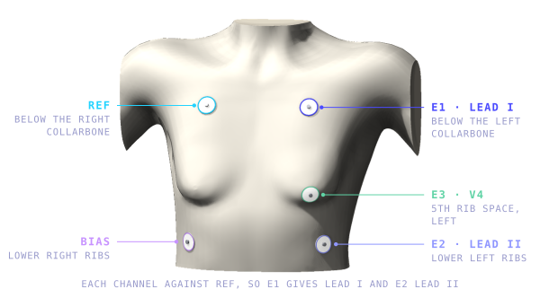
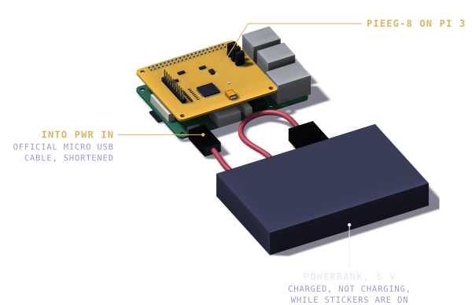
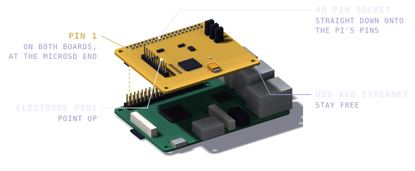
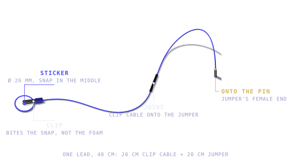

Open source EEG · Starter kit
8 CHANNEL EEG · RASPBERRY PI 3 · ADS1299 · 24 BIT · 250 HZ
ssh jure@tina.local
On your laptop: open a terminal, paste this, press Enter.


Eight channels of EEG, EMG and ECG, read by a Raspberry Pi and streamed to this page. The manual, the spec sheet and the live signal in one, served by the Pi itself, so it is there whenever the Pi is.
The Pi has no screen. You talk to it from your laptop, over the WiFi you are both on.
Terminal, press Enter.ssh jure@tina.local
The first time it asks whether to trust the Pi: type yes. Then it asks for the Pi's password; nothing appears while you type it, that is normal. You land in your lab's welcome, with the links, a session in four steps and the commands.
To leave, type exit. If tina.local does not answer,
use the address the welcome shows, or the one in the router's device list.
The ADS1299 chip can reach 16 thousand samples per second. The server on the Pi streams at 250 and does not offer a setting for it, so 250 is the number that matters here.
The last four seconds, all eight channels, in microvolts. When the badge above says LIVE, this is you. When it says SAMPLE, it is a six second simulated recording so the page still works with the Pi switched off. In your start montage only CH1 has a sticker (Fp1). The sample leaves CH2 to CH8 quiet. Live, a channel with nothing on it can show anything, and none of it means anything.
| CH1 | Fp1, against M1 |
| CH2 | Fp2, optional |
| CH3 to CH8 | not connected in the start montage |
Six things the kit is built for. One of them is the reason it exists, the other five are why it is interesting.

Alpha grows at the back of the head when the eyes close. Beta rises when you work something out. This page measures both on channel 1 and shows them as a focus number and a relaxation number: a rough readout, not a validated score, but enough to see the effect while sitting still and doing nothing visible.
Your start montage: E1 on the left forehead (Fp1), REF on the bone behind the left ear (M1), BIAS behind the right ear (M2). Alpha is strongest at the back of the head (O1, O2), but that is under hair, where stickers do not hold. From the forehead it is weaker and still shows when you close your eyes.
Simulated, to show the shape of the effect. Real recordings are noisier, and both scores sit near 0.1 to 0.25 when you are just sitting there.

Clench a fist and the forearm channels burst. A threshold turns that burst into a trigger for a gripper, a robot arm or a game, and the Pi runs the control code right next to the signal.
Stickers along the forearm muscles, up to eight, each read against REF on the elbow bone. BIAS on the wrist bone. The drawing shows four.
Needs a WebSocket consumer, a webhook, or the three free GPIO pins on the shield.

Three stickers on the chest already give a clean trace. A few squats and the rate follows, which is the fastest way to prove to yourself that the signal is real, then record the session to CSV.
E1 below the left collarbone, E2 on the lower left ribs, E3 at V4. REF below the right collarbone, BIAS on the lower right ribs. Read against REF, E1 gives lead I and E2 lead II.
Beats per minute comes from R peak timing. In the product demo it reads 66 at rest.
PiEEG Server hosts a dashboard on the Pi itself. Open it on the Pi, or from any laptop, tablet or phone on the same network, press Connect and watch all eight channels.
That is a different page from this one: the real dashboard with filters, recording and integrations.
http://tina.local:1617
The session lobby has the server address already filled in. When it opens it says no signal yet, press Connect.
Start the server with the OSC bridge and it pushes five band powers into VRChat as avatar parameters, each scaled from 0 to 1. Close your eyes and the avatar follows.
/avatar/parameters/EEG_Delta /avatar/parameters/EEG_Theta /avatar/parameters/EEG_Alpha /avatar/parameters/EEG_Beta /avatar/parameters/EEG_Gamma
Needs VRChat plus OSC. This is the part that turns the kit into something to play with rather than something to read.
Close your eyes to turn the lights off. The server fires a webhook when alpha power on CH1 crosses a threshold, and IFTTT or Zapier does the rest.
Two events leave the Pi: band_power_above and
band_power_below.
Needs a webhook endpoint. Same idea works for a fan, a lamp, or anything that already has an app.
This comes before everything else. Without it there is nothing to install onto. Six steps from a blank card to a login prompt.
tina, enable SSH with a password, set the username, set the WiFi
name and password with country DE, and set the timezone to Europe/Berlin. Imager writes these as
configuration files on the card. Without them the Pi needs a monitor and a keyboard to set up.http://tina.local in a browser, or run
ping tina.local. If neither answers, open the router's admin page and look for a
device called tina.ssh jure@tina.local. Accept the fingerprint with
yes. The password does not appear while you type it, that is normal.If the router's 2.4 GHz band is switched off, or the network name belongs only to the 5 GHz band, the Pi will never appear and nothing else will fix it. This happened here: the first scan showed only a 5 GHz entry for the same name, and the 2.4 GHz one only showed up on a forced rescan.
tina.local is a name resolved over the network, not a fixed address. When it
stops answering, the router page is the answer. A reinstall is not.
Eight steps, in the order that works. The two long ones are the shield and the software.
Three options, one of them safe. Press each one to see why.
The board has no isolation between the electrodes and the supply. That single fact is why the whole kit runs from a battery.


Your card already has this. pieeg-server --version prints 0.49.0. This
part is here for a new card or a repair, written out command by command with the expected output
after each check, because a silent command is indistinguishable from a broken one. The reference
copy is docs/setup-raspberry-pi.md in the repository; a test in tests/
keeps the commands here identical to it.
ssh jure@tina.local
sudo apt update && sudo apt full-upgrade -y
Ten to twenty minutes on a Pi 3. It is not stuck.
sudo apt install -y git python3-dev build-essential
Not optional. Without them the SPI module cannot be compiled.
git clone https://github.com/pieeg-club/PiEEG-server.git ~/PiEEG-server cd ~/PiEEG-server git checkout -b homelab 9bf350310bb492e1373edfe5b0714857f1fe04e9 git log -1 --format='%h %ad %s' --date=short
Expect 9bf35031 2026-09-16 Update README. The version is pinned on purpose, so the device cannot break because somebody upstream pushed a change.
sudo -v && bash setup.sh
Seven stages, each with a tick: detect the Pi, check prerequisites, install
packages, enable SPI, build the venv, create the service, self test. The file is not marked
executable in PiEEG's repository, which is why it runs as bash setup.sh.
The script checks sudo at stage two with its own messages hidden, so a password prompt there
can look like a failure. sudo -v in front asks for the password first and keeps
sudo unlocked for the script. Running the script twice is safe.
sudo reboot
SPI does not exist until after this. Before the reboot,
doctor correctly reports no SPI devices, and that is not a failure.
ls -l /dev/spidev0.0 /dev/gpiochip0 grep -E '^(dtparam=spi=on|core_freq_fixed=1)' /boot/firmware/config.txt
Both devices must exist, and both lines must be in the config file.
sudo sed -i 's|bin/pieeg-server|bin/pieeg-server --device pieeg8|' /etc/systemd/system/pieeg-server.service grep ExecStart /etc/systemd/system/pieeg-server.service sudo systemctl daemon-reload sudo systemctl restart pieeg-server
Expect ExecStart=/home/jure/PiEEG-server/.venv/bin/pieeg-server --device pieeg8 --gpio-chip /dev/gpiochip0. The device flag once, the chip flag present.
pieeg-server doctor systemctl is-active pieeg-server curl -s http://127.0.0.1:1616/health curl -s http://127.0.0.1:1616/api/info
Expect All checks passed! Ready to stream EEG data., then active, then ok, then {"version": "0.49.0", "branch": null}. In that order.
The official one line install. It pulls the newest main, so it does not give the pinned version. Fine for a clean start, not for a device you want to keep working.
curl -sSL https://raw.githubusercontent.com/pieeg-club/PiEEG-server/main/install.sh | bash
Measured on your hardware: Pi 3 Model B Rev 1.2, Raspberry Pi OS Lite 64-bit Trixie, Python 3.13.5. Clean card to a passing doctor: about 25 minutes, 12 of them apt and 5 of them pip. Installed version 0.49.0.

Three stickers, three leads. Each lead is a jumper plus a clip cable, 40 cm in all: the jumper's female end goes onto the pin, the clip cable plugs into the jumper's male end, and the clip bites the metal snap in the middle of the sticker, not the foam. Push every joint fully home.
Stickers go on skin, not hair. Wipe each spot with alcohol and let it dry for 30 seconds. Stick E1 on the left forehead with its lower edge just above the eyebrow, REF on the bony bump behind the left ear, BIAS on the same spot behind the right ear. Press each one for five seconds. The drawing in card 01 shows all three.
| Pin on the board | Sticker | Where |
|---|---|---|
E1 | Fp1 | left forehead |
Ref | M1 | behind the left ear |
Biasout | M2 | behind the right ear |
E2 | Fp2 | right forehead, optional |
E3 to E8 | none | stay empty for now |
Where the Pi goes: on a shelf at shoulder height just beside your left shoulder, or on the pillow beside your left ear if you lie down. Measured on an adult head and shoulders, the leads then run 28, 20 and 33 cm sitting and 19, 9 and 23 cm lying, so 40 cm hangs loose. Nothing should pull on a sticker. Not behind the head: Fp1 is too far from there.
Nothing to start: PiEEG Server runs as a service and comes up with the Pi, about a minute after power. Power goes in last, after the stickers and clips are on. Then, from the laptop:
python check_setup.py --noise-test
From pieeg-home-lab/code with the venv active. Every line [ok]
means WiFi, Pi, server, 8 channel mode and board all work; the first [FAIL] names the broken
link. Or on the Pi itself: pieeg-server doctor, expect All checks passed.
Then open http://tina.local:1617 and press Connect. It should show
8 channels. Sixteen means the service lacks --device pieeg8 (step 4.7).
To run the server by hand, for example with --mock to see the dashboard
move without a board, stop the service first: sudo systemctl stop pieeg-server, then
pieeg-server --mock. Otherwise the ports are already taken. sudo systemctl start
pieeg-server brings the service back.
Four outcomes, and what each one means:
python record.py --seconds 60 --label eyes_closed
From pieeg-home-lab/code on the laptop. It writes
recordings/<date>_sub-01_eyes_closed.csv plus a .json sidecar with the
montage, the filter state and every gap, switches the server's filters off while it records so the
file is raw, and puts them back afterwards. spectrum.py reads the result.
Without a terminal, the dashboard's Record button saves a raw CSV on the Pi, in
~/PiEEG-server/recordings/, and lists it for download. Those files have no sidecar,
so note the montage yourself.
Ten rules. They decide whether you get a clean signal or a noisy one, more than any setting does.
record.py records raw regardless, you filter later.| What you see | Why | What to do |
|---|---|---|
| Badge says SAMPLE, not LIVE | This page comes from the Pi, so the Pi is reachable, but PiEEG Server on port 1616 is not answering, or it just restarted | Wait: the page tries again by itself every few seconds. Still SAMPLE after a minute: systemctl status pieeg-server |
| Badge says connected, no data | The socket is open but no samples arrive, usually because no shield is mounted | Fit the PiEEG-8, or start the server with --mock to watch the page move |
| Port 1617 will not load | The server is not running | systemctl status pieeg-server, then restart it |
tina.local not found | The name is not resolving, or the Pi has no address | Find the IP in the router and use the IP |
| Traces flat, straight line | Sticker off, wrong pin, or the board off by one | Reseat, then recheck the pin table |
| Thick hum on every channel | Mains pickup | Everything on the battery, away from the router, notch at 50 Hz |
| Spikes on one channel | That sticker has bad contact, or a joint is loose | Alcohol, a fresh sticker, the clip on the snap, every joint pushed home |
| Dead after a reboot | The service is not enabled, or it crashed | journalctl -u pieeg-server -n 40 |
| Shield hot rather than warm | Wrong seating | Unplug it, check the alignment drawing |
What has been measured with this kit, session by session, and the results of each mission, lives in
docs/lab-notebook.md
in the repository: date, montage, what was done, what came out, and the plot. Every entry has a
recording behind it that record.py wrote, with its sidecar.